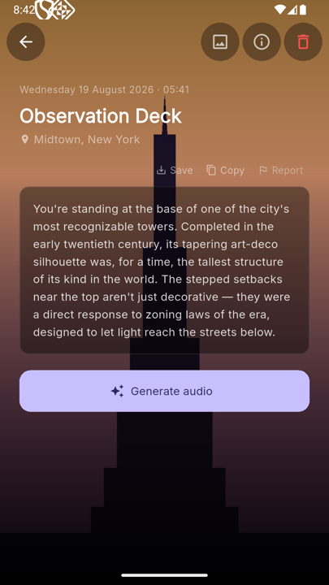
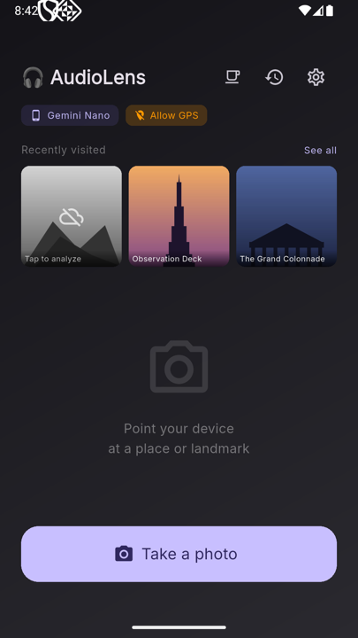
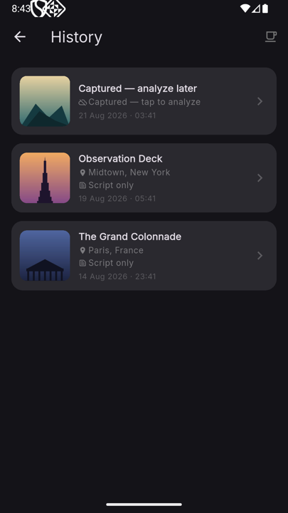

AudioLens turns a photo of a place — a monument, a museum facade, a mountain ridge — into an instant, spoken guide. On-device or in the cloud, your choice.

AudioLens is currently in internal testing on the Google Play Store — the listing isn't public yet, so there's no install link to share. The project is fully open source in the meantime: read the code, follow along, or build it yourself from the GitHub repository.
✉️ Want to help test it? Get in touch →No app-store browsing, no typing a search query while standing in front of something interesting — just point, shoot, and listen.
Take a photo (or pick one from your gallery) and AudioLens identifies the place and writes a script on the spot.
Reads GPS from the photo's EXIF data first, falls back to real-time location — and lets you pick the spot on a map when neither is available.
Nearby points of interest and Wikipedia context are folded into the script for real historical and cultural detail.
Gemini Nano runs the whole pipeline on-device — no internet connection or account needed, with a shorter local-only script.
Gemini TTS in the cloud, native Android TTS as an automatic offline fallback — female or male voice, adjustable speed.
Every place you've captured stays searchable and replayable, with the model, GPS source, and duration behind each one.
Example content shown below to illustrate the interface — not live captures.


One pipeline, from a photo to a spoken guide — see ARCHITECTURE.md for the full breakdown.
Your own Google account — the best quality, recognizes specific artworks and landmarks, ~400-word scripts.
Runs locally on supported Android phones — works without any internet connection, ~180-word scripts.
Cloud when available, local automatically otherwise — no manual switching needed mid-trip.
AudioLens is a Flutter app (Android today) with a documented architecture and an open contribution process — Conventional Commits, PR-based review, CI on every push.